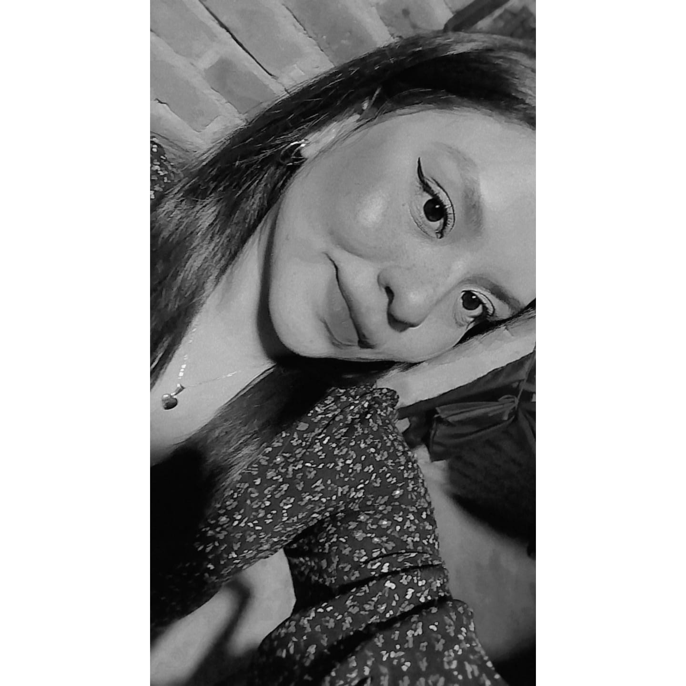
Mi Suerte - Morat
"Quiero empezar por nuestra canción, Mi Suerte, es simplemente nuestra canción. Nuestro Himno, la canción que representa mucho lo que nos amamos, la suerte que tuvimos al encontrarnos, la suerte que usamos en encontrarnos, y como dice la canción: "Aunque no pueda verte", pues nos vemos por fotos, por todas las demás cosas que tenemos juntos, nos vemos en nuestros corazones, aunque estemos lejos, aquí seguimos y seguiremos siempre, pues simplemente quiero que estemos juntos toda la vida porque nuestra suerte de encontrarnos y coincidir en este mundo, entre tantas personas, estamos juntos tú y yo, y siempre lo estaremos porque es nuestra suerte, y es la mejor de las suertes encontrarte a ti, sencillamente, la mejor de las suertes, encontrarnos ❤️."
Favorito - Camilo
"Simplemente, eres mi lugar favorito, mi lugar seguro, somos lo que ambos necesitamos, nos queremos mutuamente y asi viaje todo el mundo o este donde este mi lugar favorito siempre serás tú, porque eres la persona que más amo, más quiero y que más adoro, eres mi vida entera, me encanta como pasamos tiempo juntos, es mi momento favorito del día, asi nos escribamos por WhatsApp, hagamos llamada, veamos algo o juguemos, cualquier cosa, son mis cosas favoritas, porque simplemente, estas tu ahi, y quiero que siempre lo estes ❤️."
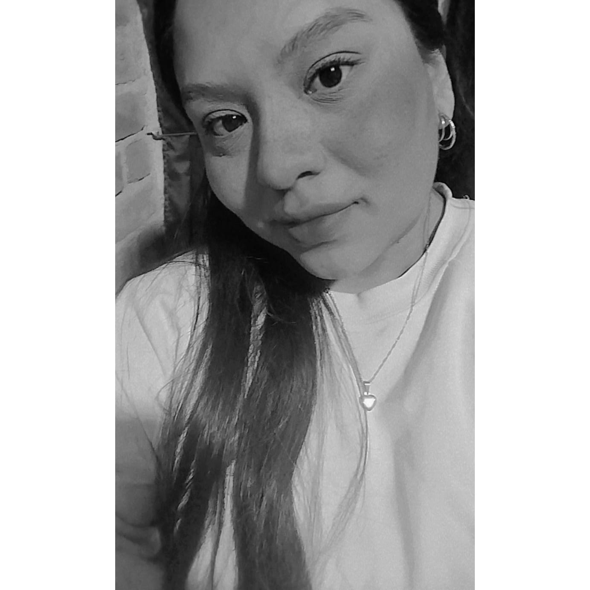
No Hay Nadie Más - Sebastián Yatra
"Recuerdo aquel día..., como si fuera hoy..., ese 28 de agosto del 2024. Aquel día que nos conocimos y empezó nuestra linda historia, la cúal creo yo, ya estaba escrita. "Voy a cuidarte por las noches..., Voy a amarte sin reproches..., Te voy a extrañar en la tempestad..., Y aunque existan mill razones para renunciar..., No Hay Nadie Más...", con esto quiero decirte que sencillamente eres la mujer que quiero, la chica de mi vida, y aunque tengamos nuestras diferencias, siempre intentaremos solucianarlas porque no me imagino una vida que no sea contigo, No hay ni habrá nadie más porque yo Te Amo, Te Amo Amor Mío ❤️."
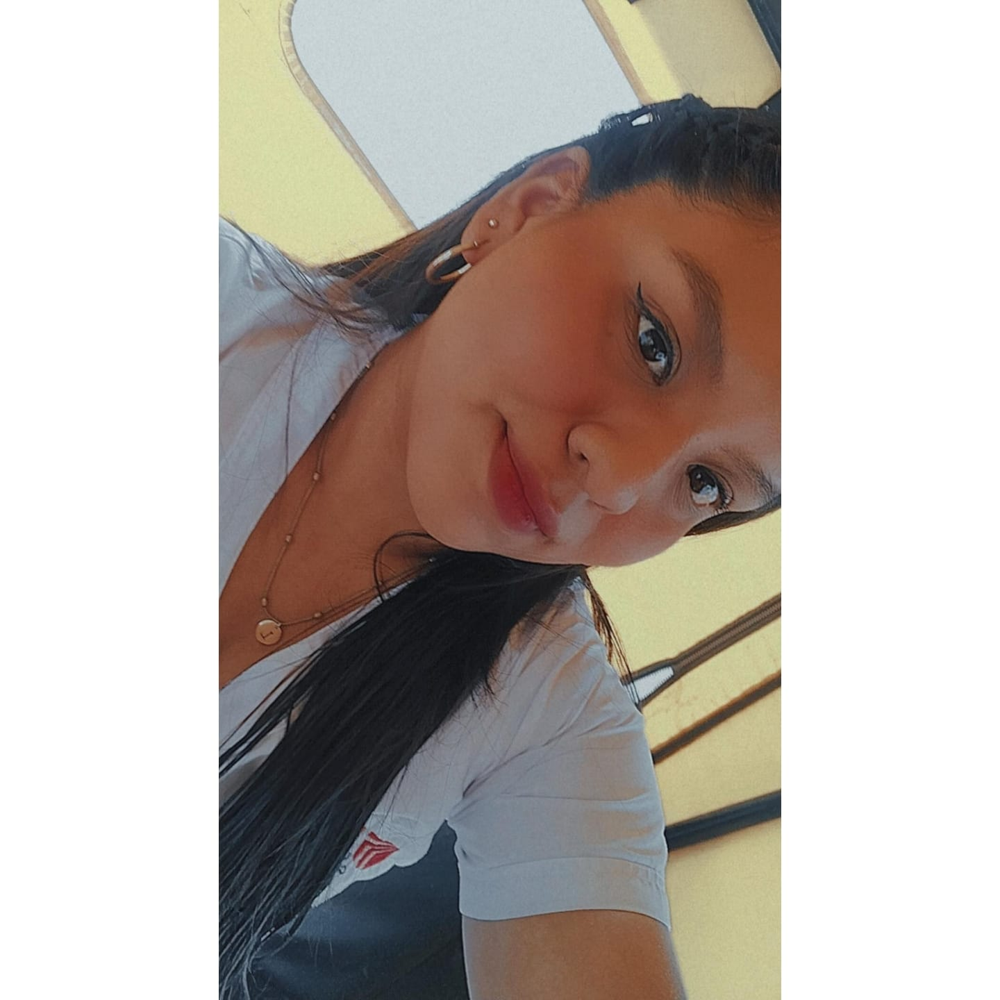
Bendita Tu Luz - Maná
"Una de las canciones que más me gustan, pues describe que fue el momento correcto, fue bendito el momento, el reloj y más que la coincidencia, el destino que nos juntó, que estamos aquí, que todo se dio como se debió darse, y como dice la canción: "De encontrarte justo ahi, en medio del camino" y "Coincidir en mi destino, en el mismo destino", de seguro será una de las canciones que te haga llorar, y escúchala completa porque es toda tuya, Tu Canción Mi Amor ❤️."
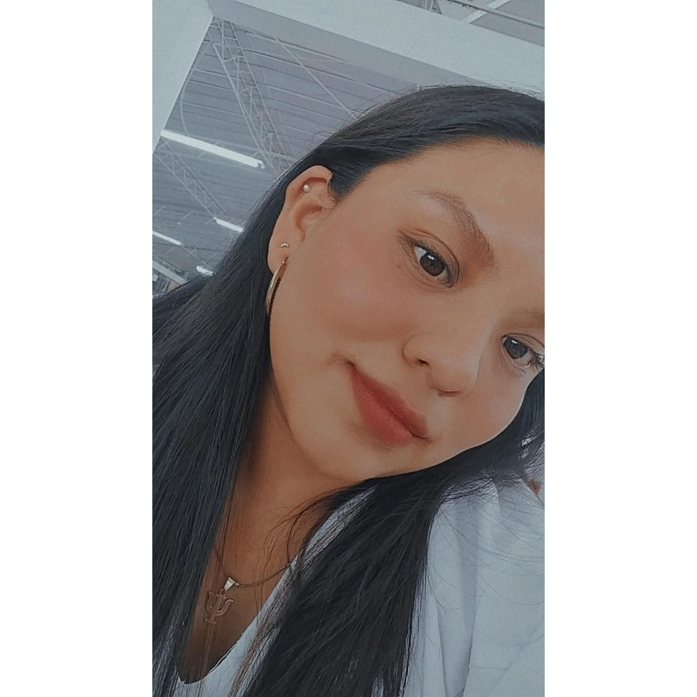
Por Eso Te Amo - Río Roma
"Una de las canciones que describen muchas cosas, pues eres más de lo que pude haber soñado, eres la mujer que amo, que me gusta y que me hace sentir más seguro del amor que ambos sentimos, no dudo de este amor porque en ti tengo todo, Te amo tal y como eres, porque como dije desde el principio, acepto términos y condiciones, Te amo porque me aceptas como soy, porque mejoramos cada día como pareja, Por eso Te Amo, por eso y por muchas cosas más, Te Amo ❤️."
Colgando en tus Manos - Carlos Baute
"Quizá no fue coincidencia encontrarme contigo..., tal vez esto lo hizo el destino..., esta es una de las canciones en donde te quiero decir que me tienes colgando en tus manos, mi corazón está colgando en tus manos, pues confió en que lo cuidaras y puedo ser yo mismo, puedo sentirme vulnerable y sé que contigo no debo ser siempre fuerte, pues me ayudas y apoyas en todos los momentos, estas conmigo en los buenos y sobre todo en los malos momentos, y me encanta porque ambos nos apoyamos siempre mi amor, juntos en las buenas y en las malas ❤️.️"
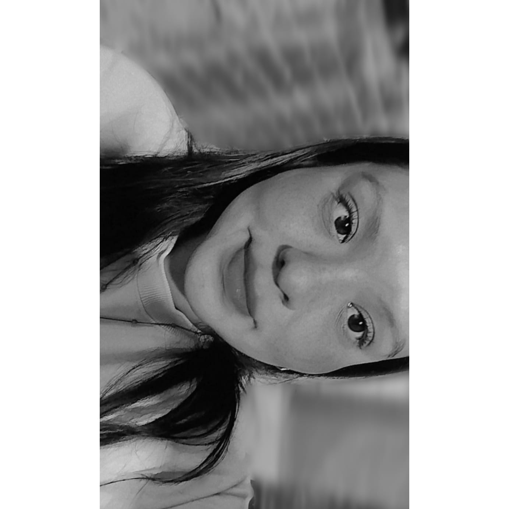
Te Encontré - Lil Silvio & El Vega
"Una de las canciones con las que más me identificó, pues como dice la canción: "Te encontré, ya encontré la mujer que por tanto tiempo había esperado...", pues nos conocimos por obra del destino y nos encontramos en el camino, pues me haces sentir el dueño del mundo porque tú eres mi mundo. "Ella es, y ella es, y ella es..., REALMENTE EL AMOR DE MI VIDA...", una frase que desde te conoci, no me he sacado de la cabeza que quiero que seas y serás la mujer de mi vida ❤️."
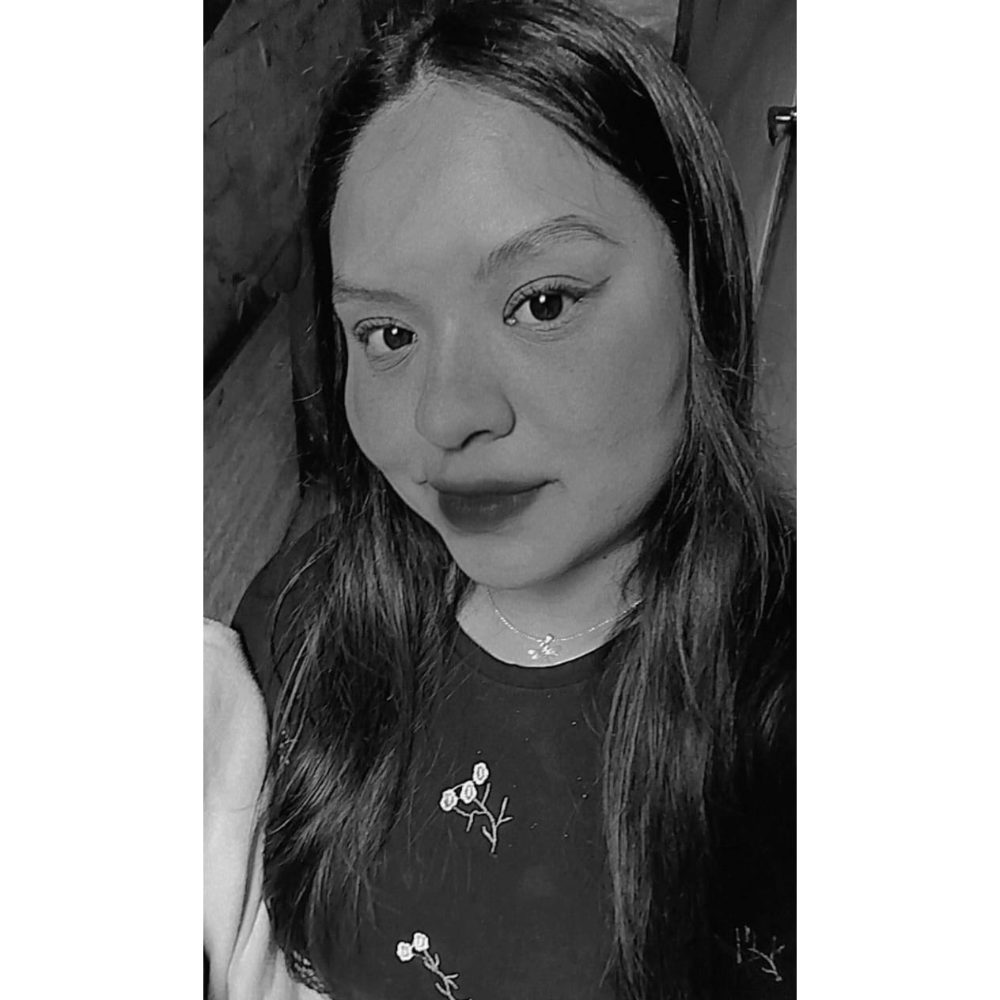
La Melodía - Joey Montana
"La melodía que le da un ritmo hermoso a mi vida, la nota que le faltaba a mi corazón para ser feliz, esa persona eres tú, pues contigo, "No pienso en los días, los detalles, contigo todo es sol, playa y arena, Tú eres tan perfecta para mí", pues nos complementamos muy bien, somos una pareja bonita y fuerte, y contigo todo es bonito, es risas, buenos momentos, y aunque se presenten malos momentos, los superamos como la pareja que somos y es lo que me encanta, ademas de que ambos ponemos de nuestra parte para que esta melodía de nuestra relación sea armonica, bonita y feliz ❤️."
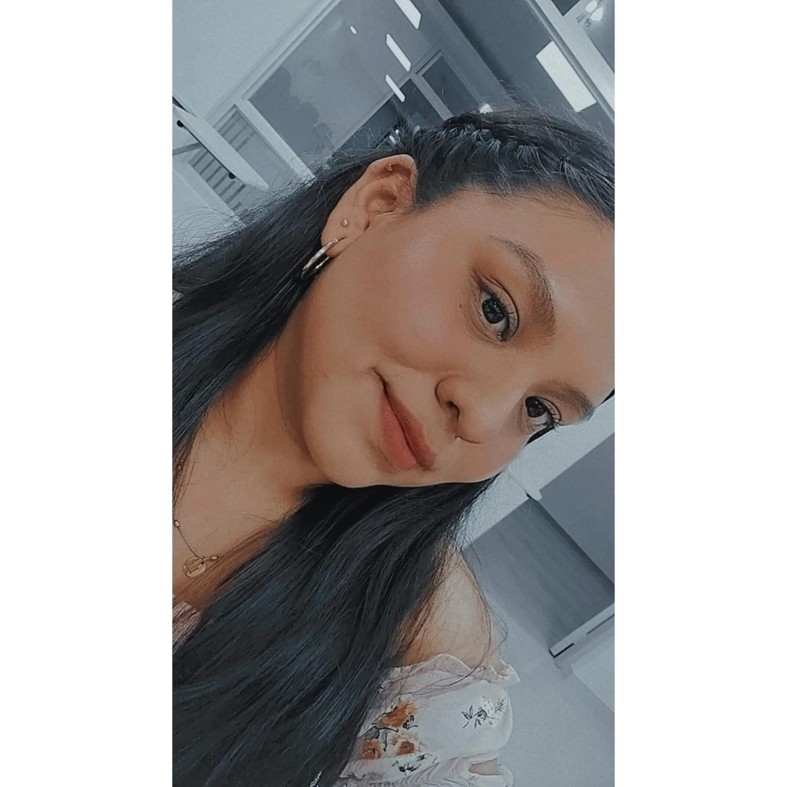
Tienes La Magia - Lil Silvio & El Vega
"En esta canción quiero describir la magia que tienes, esa magia tan linda de tu voz, tu carita, tus ojos, tu boca, tus labios, tu cabello, y simplemente todo de ti lo que me enamora y hechizas mi corazón pues, te amo con todo mi ser, y también esa magia linda que tiene nuestra relación, pues es más seria, más bonita y ambos tenemos las mismas ganas de un futuro juntos, y si me pregunta: "¿Esto a quien se lo escribí?, a la mujer de mis sueños", y esa mujer eres tú, el amor de todas mis vidas ❤️."
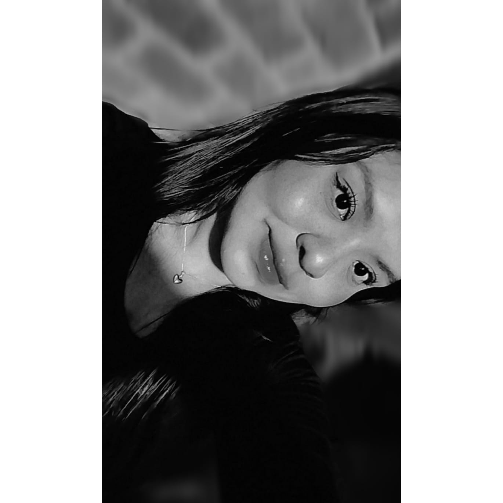
Me Voy Enamorando - Chino y Nacho
"Esta canción representa como de ti me fui enamorando, pues con tu sonrisa me convertiste que a donde tú me digas voy, y que hay un lugar muy especial donde quisiera que estemos juntos y me respondas con un "Sí, acepto", y si ves el video en YouTube, podras ver porque también esta cancion es tan especial para mí, y siempre agradecere que apareciste en ese momento de mi vida ❤️."
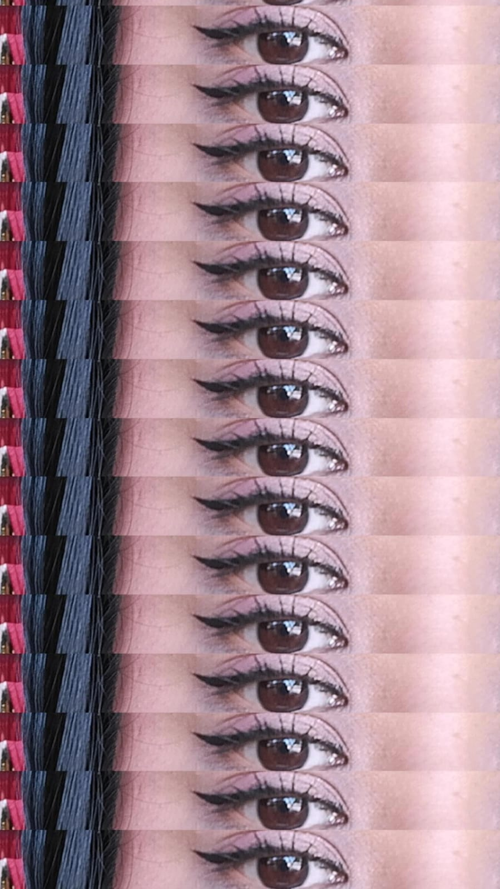
Ojitos Lindos - Bad Bunny
"Simplemente, tus ojitos lindos, hermosos y bellos que desde que los mire, me enamore de ti, y me siguen enamorando todos los días de mi vida, y con que solo me mires, yo estoy bien, porque nos encontramos en el trayecto y solo mírame con tus ojitos lindos, pues como tú no hay ni habrá otra persona, yo solo quiero que seas tú, pues lo único que me puede convencer de algo es tu sonrisa y tus ojitos lindos, ya que no hace falta nadie aquí, solo tú y yo ❤️."
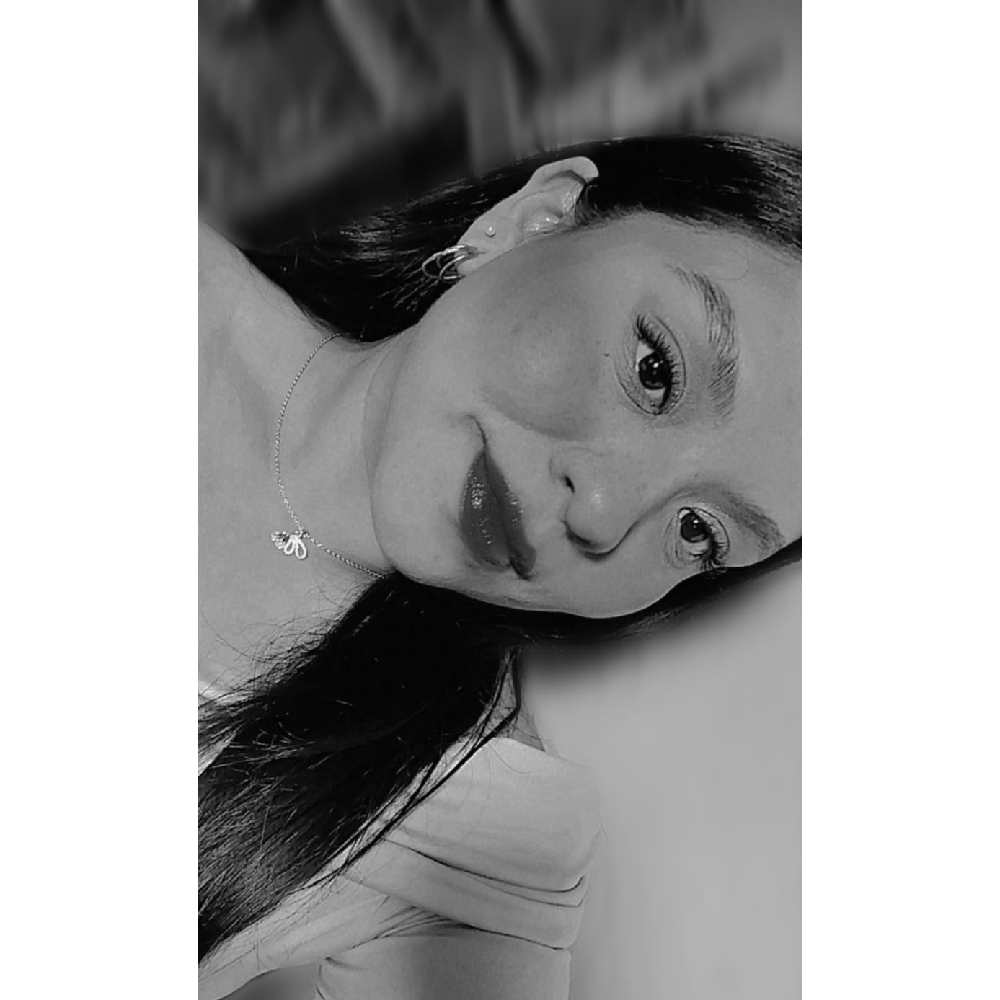
Baile Inolvidable - Bad Bunny
"Nuestra canción, pues ambos somos nuestro Baile Inolvidable, ya que hemos pasado por muchas cosas, bonitas y malas, sí, pero nuestro amor no se olvidara ya qué ambos queremos estar juntos siempre, esta es nuestra canción porque nuestra relación está marcada por un baile de nuestros corazones, a kilómetros de distancia, pero latiendo y bailando al mismo ritmo, amándonos todos y cada uno de los días de nuestras vidas ❤️."
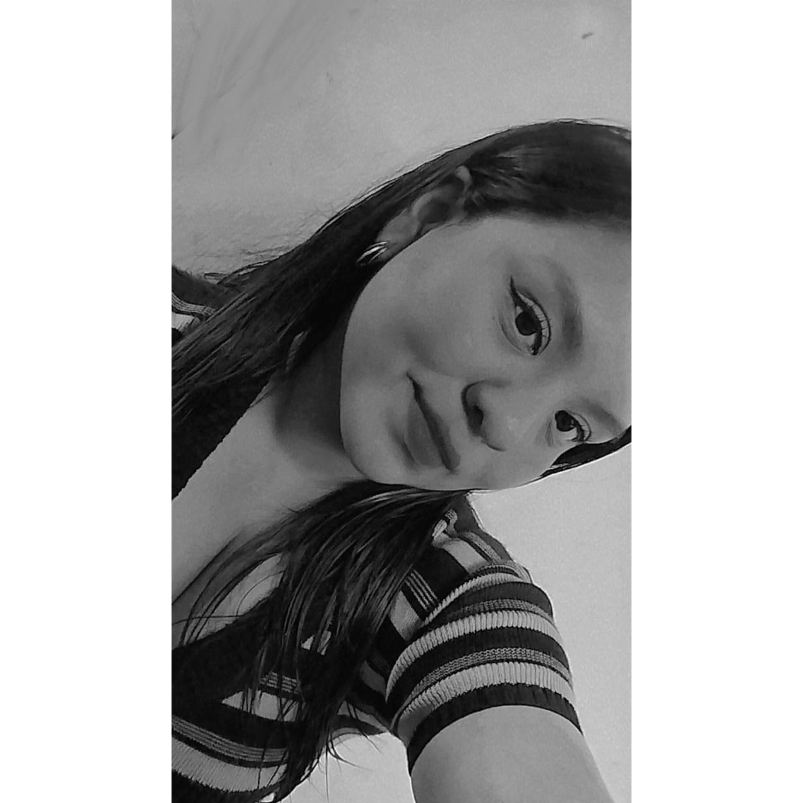
A Dónde Vamos - Morat
"Lo unico que quiero es que a pesar de no se lo que pase en nuestras vidas, estemos y sigamos juntos, pues desde el inicio, desde que nos conocimos, como dice la cancion: "Siendo un extraño, te dije te amo..., Te he estado buscando por más de mil años..., Y tú respondiste: ¿A Dónde Vamos?", pues somos la prueba de que existe el amor a primera vista, ya que nuestra historia no estaba prevista, pero si estaba escrita porque el destino hizo que nos conocieramos y tu respondiste: ¿A Dónde Vamos? ❤️."
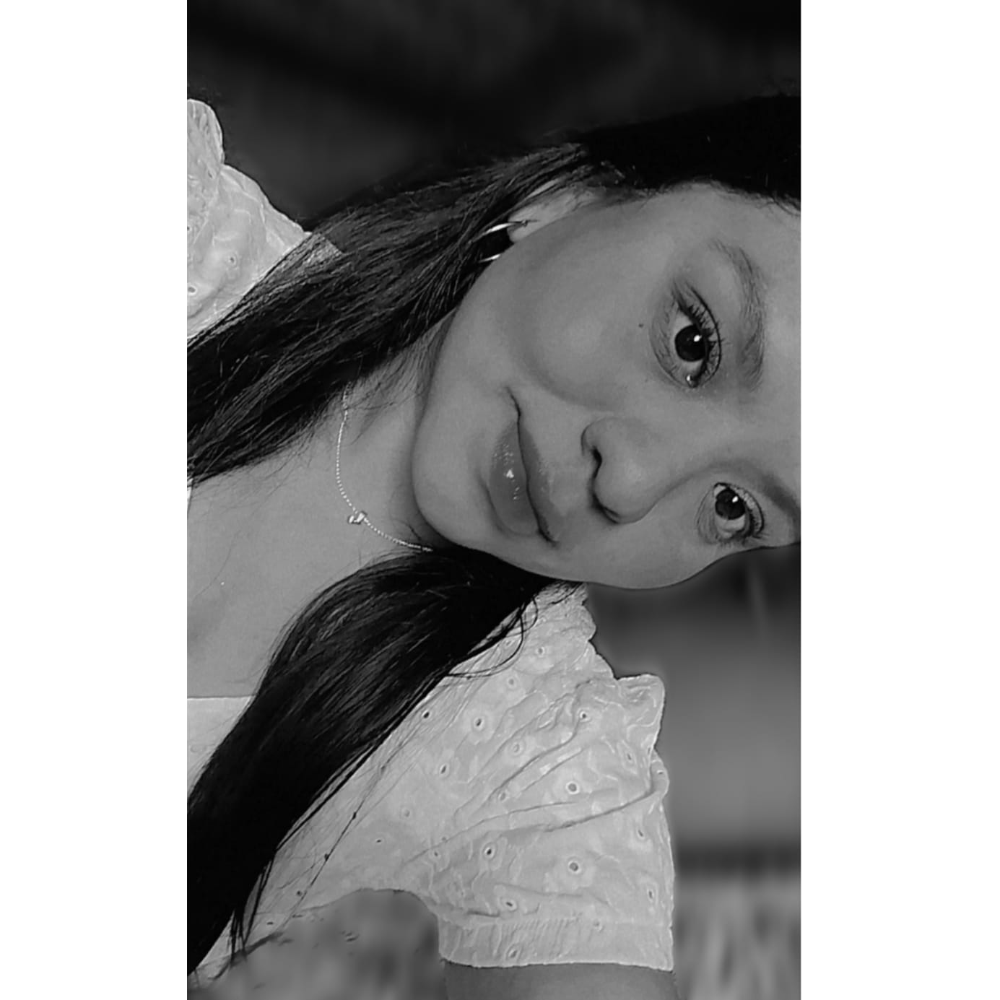
Volví A Nacer - Carlos Vives
"En esta canción quiero decirte que gracias a ti, literalmente volvi a nacer, porque llegaste en el momento justo y te amo por eso, porque fue el momento correcto y quiero morir en tus brazos, por eso quiero casarme contigo, quiero que tengamos una hermosa vida juntos y estar juntos siempre porque siempre sere tu fiel chofer de nuestras vidas, ya que somos un gran equipo, por eso te pido que sigamos siempre juntos, cumplamos nuestros sueños y cumplir uno de nuestros más grandes sueños, Casarnos ❤️."
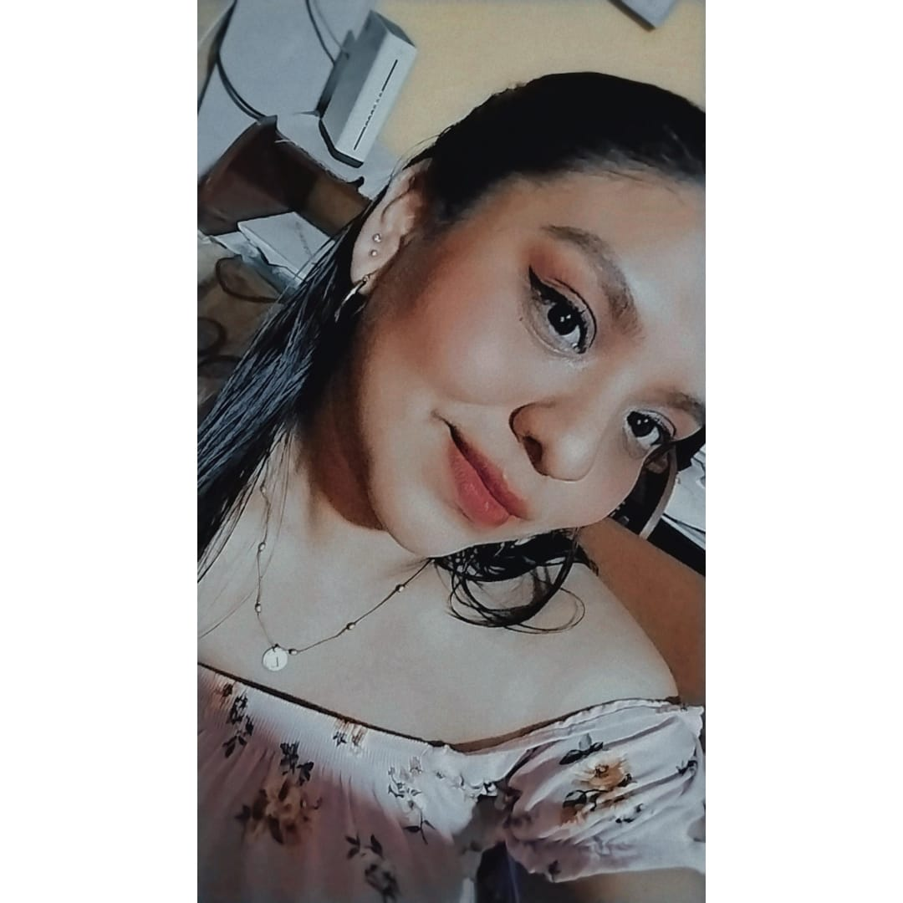
Nuestro Sueño - Grupo Niche
"La canción que me hace recordarte, en el sentido de todos los sueños que queremos cumplir, y sé que con nuestro apoyo y esfuerzo de ambos podremos lograrlo, si una mirada bastó, para empezar nuestro sueño, nuestra relación, imagina lo que seremos capaces de lograr, solo te pregunto: "¿A Dónde Vamos?, ¿Cuándo Vendrás?, pues sé que vendrás, a cumplir nuestro sueño, a hacerlo una realidad, ambos iremos, juntos de la mano, a cumplir nuestros sueños, juntos, pues no me cansaré de esperarte, no descansaré, no desmayaré, hasta que por fin pueda verte ❤️."
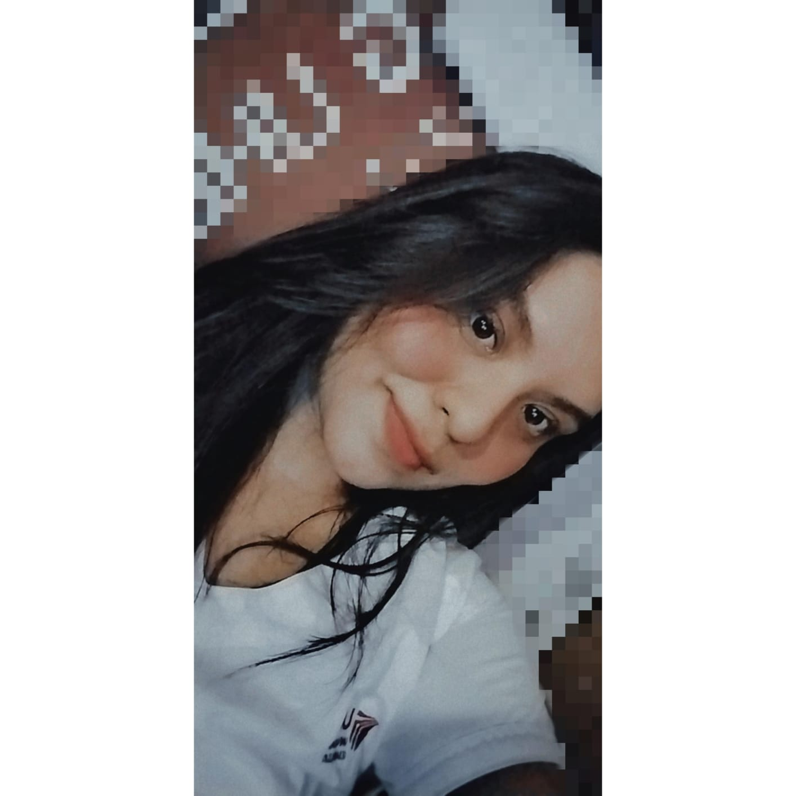
Ámame - El Gran Combo de Puerto Rico
"Una canción que me encanta mucho, pues solo pido que me ames, ámame siempre, quiéreme, bésame, abrázame, que quiero que me ames toda la vida, pues yo te amo y siempre te voy a amar, solo quiero que nos amemos toda la vida como si fuera el primer día, que ambos pongamos de nuestra parte para que este amor sea eterno, porque nos amamos, nos amaremos siempre, por eso te digo, te amo y solo te pido: Ámame, Ámame toda la vida ❤️."
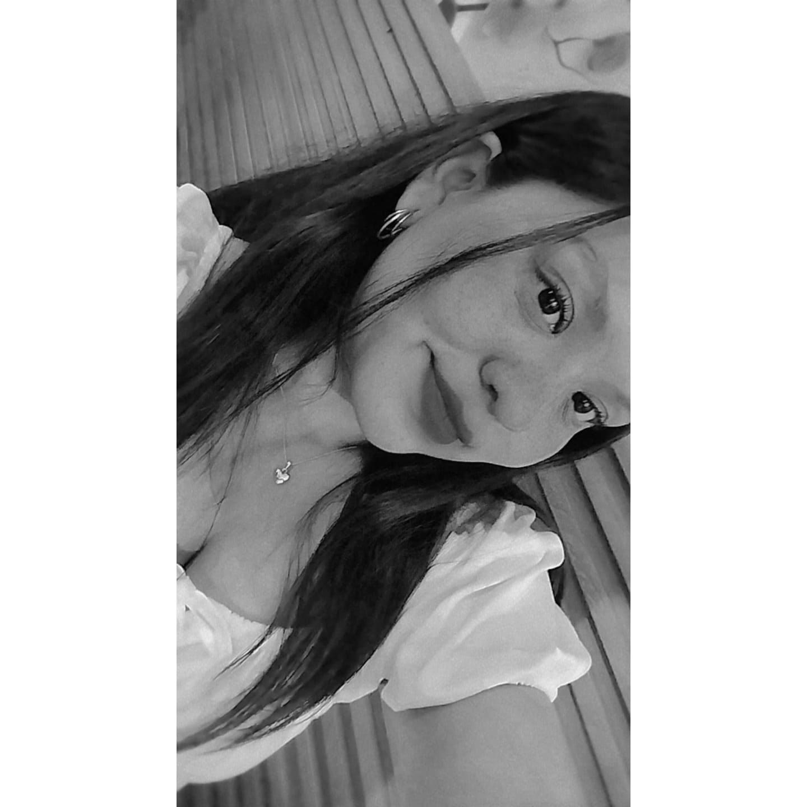
Valió La Pena - Marc Anthony
"En esta canción quiero decirte que no me arrepiento de nada, y que valió la pena perder el miedo, nerviosismo y tener la valentía para poder escribirte, y valió la pena que me respondieras, valió la pena todos y cada uno de los momentos que hemos pasado, pues todos esos momentos nos han llevado hasta aca, a ser una pareja, a ser enamorados, y a pesar de todo, valió la pena, pues estamos bien, mejor y más fuertes como los enamorados que somos, valieron la pena los malos, pero sobre todo los buenos momentos, ya que a pesar de todo, vale la pena seguir aqui porque quiero que seas la mujer de todas mis vidas, hoy, mañana y siempre. Como dije, de nada me arrepiento pues, eres y serás la mujer de todas mis vidas ❤️."
Tú y Yo - La Misma Gente
"Una canción que describe como solo necesitamos ser tú y yo, para ser una familia unida y feliz, que con el tiempo pueda ir creciendo, pues digo que nunca dudes que te amo, ya que no importa la distancia a la que estemos siempre tendré ganas de besarte, una y mil veces. Con el tiempo poder seguir juntos y poder decir: Tu y Yo, Por siempre Tú y Yo, nunca dudes mi cariño, quiéreme, quiéreme por siempre, ámame, pues yo solo soy de ti y quiero ser de ti, pues no puedo vivir sin ti, quiéreme, quiéreme, quiéreme que tuyo siempre sere. Siempre solos Tú y Yo ❤️."

Idilio - Willie Colón
"Una de las muchas canciones que quiero que bailemos, cantemos y vivamos juntos, siendo felices juntos, pues ambos queremos que se cumpla nuestro idilio de amor y a besos levantarte todos los días, y que se fundan en una sola tu alma y la mía. Que se fundan en un abrazo eterno, en un idilio de amor. Pues sueño contigo que se cumpla nuestro idilio de amor, estando juntos, viviendo juntos y siendo una familia bonita, unida y feliz, Mi Amor ❤️."
Amor De Vago - La T y La M
"Sé que es un cambio drastico de género musical, pero quiero que escuches esta cancion, pues me encanto mucho, ya que habla de un beso, ese beso que te quiero dar, que nos demos un beso de vago, de esos que tienen muchas ganas de amar, de esos que representan todo el amor que sentimos, un beso en el que se sienta y se vea nuestro amor, un beso que venga acompañado de abrazos y muchas ganas de amar, un beso despacio en el cual podamos decir: "Por fin mi amor..., Por fin juntos...", llorando ambos y dandonos un besito, un beso con todo el amor del mundo ❤️."

Por Primera Vez - Camilo
"Una canción que tal vez te emocione demasiado, pero creo que es una de las mejores representaciones de lo que podemos lograr a hacer, pues ambos sabemos que volveríamos a esperar una y mil veces para poder tener un amanecer bonito, pues mi vida es vida solo contigo, ya que contigo le he encontrado sentido, unos sueños por cumplir y eres lo que necesito, tener nuestro amor demostrado al mundo, nuestras familias unidas, viviendo ese gran sueño, de ser esposos oficiales y siendo mucho más felices juntos ❤️."
Eres - Café Tacvba
"Una canción muy bonita en la que te digo que eres mi todo, mi pensamiento constante, ya que eres lo que más quiero en este mundo, eso eres. Eres y serás la mujer de mi vida, la mujer que quiero que sea la madre de mis hijos, la chica con la que quiero cumplir mis sueños, la chica con la me quiero casar. Estaré siempre a tu lado y quiero que tú lo estes al mío siempre, pues lo que yo mas amo en este mundo, eso Eres ❤️."
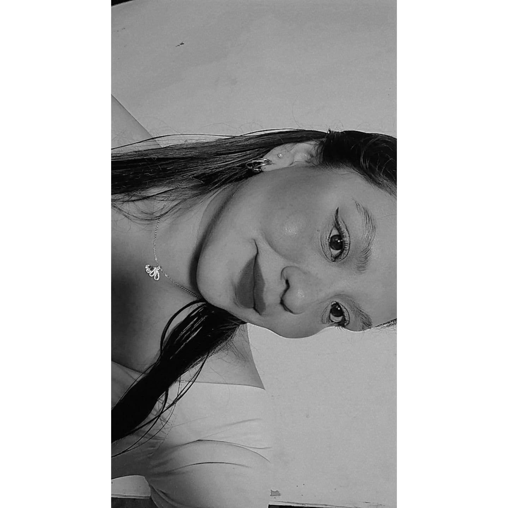
Te Voy A Amar - Axel
"En esta canción, quiero que sepas que daria todo por tu amor, no sé cómo explicarte con palabras lo que siento por ti, pues te voy a amar siempre, y hacerte sentir que te elijo todos y cada uno de mis días, ya que nuestro amor siempre será mutuo, ambos nos amamos y por eso quiero que mi vida entera sea junto a ti, pues junto a ti siento paz, tranquilidad y seguridad de que seremos solo tú y yo, pues te voy a amar, hoy, mañana y siempre, Amor Mío ❤️."
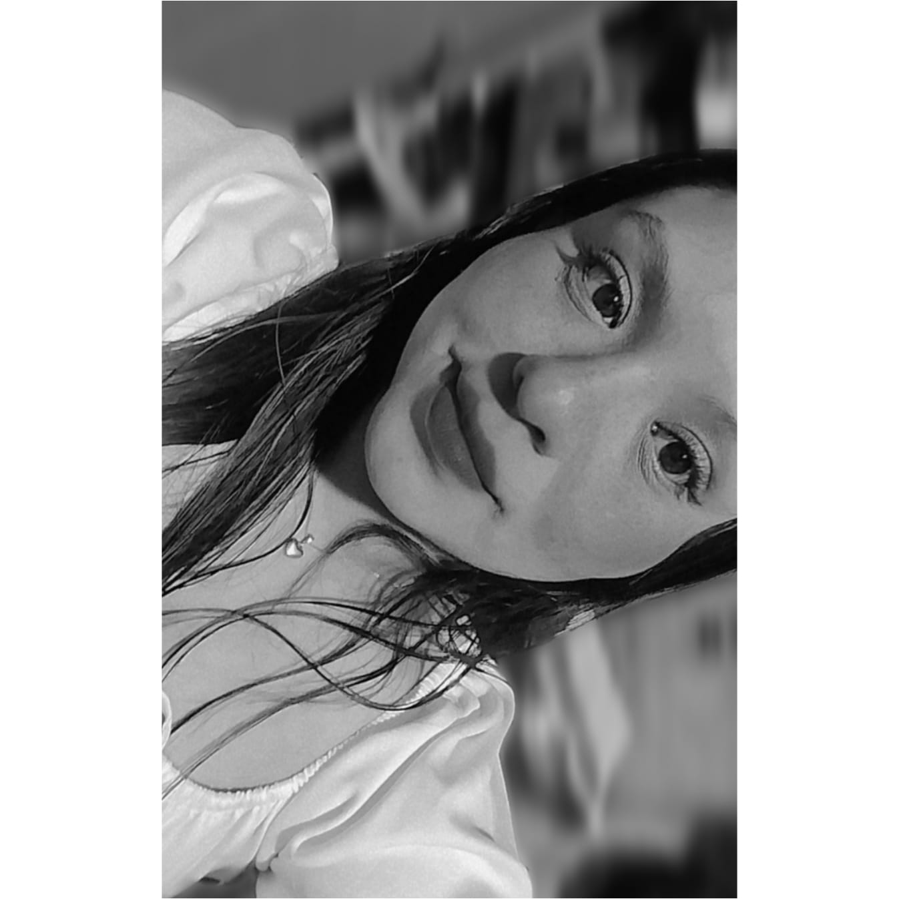
Mi Vida Entera - Morat
Tal vez en este punto ya estés emocionada, llorando Mi Amor Jaja. Pues, puedo hacerte una pregunta: ¿Y si bailamos? ¿Tan solo bailamos? Espero que todo lo que he hecho te haya gustado, sabes como dije que eres Mi Vida Entera, y no podía culminar la sorpresa sin tu canción, ya que empezamos celebrando la Suerte de habernos encontrado y decidimos caminar sin importar A Dónde Vamos, y esta canción es la representación para decirte que te entrego Mi Vida Entera. Con esta canción quiero que sepas que no es solo una canción, sino que es la manera de decirte que quiero que esta canción dure toda la vida, que estemos juntos siempre, pues como dije eres la mujer de mi vida, quiero que sea asi siempre, que solo seamos tú y yo, tengamos nuestro baile inolvidable, mientras miro tus ojitos lindos, ya que desde que te encontré, no hay nadie más para mí, pues tienes la magia que me hizo volver a nacer. Es tan bendita tu luz que hoy me alegro por mi suerte que siento que vivimos nuestro sueño, cumpliendo nuestro idilio que está colgando de nuestras manos, te pido: ámame, que yo te voy a amar todos los días de mi vida como si fuera la primera vez, pues tú eres mi lugar favorito y seguro, ya que cada día me voy enamorando más, ya que siento que estamos en una melodia perfecta, superando cada mal momento que pasamos, ahora sé que valió la pena, pues podemos hacer crecer aún más este amor de vagos, tan leal y sincero. Sin importar a donde vamos, si al final no te parece tan loco, si lo piensas, dame todo, dame todo, di que Sí, ya que te entrego Mi Vida Entera. Te Amo ❤️."